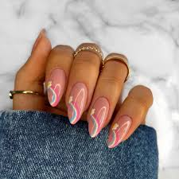
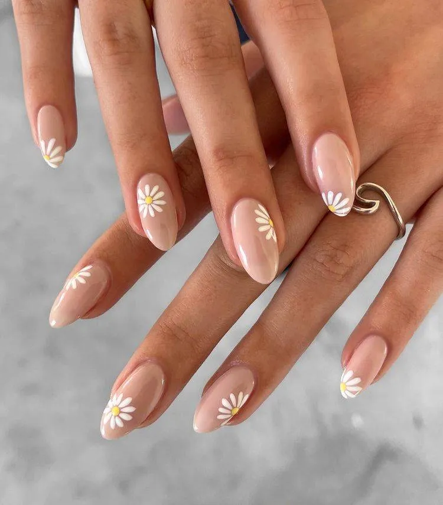

Manicura Básica
Este servicio incluye limpieza y recorte de uñas, tratamiento de cutículas, exfoliación, masaje y esmaltado básico.
Reservar

Manicura Francesa
Este servicio ofrece un elegante diseño de uñas con el clásico estilo francés, que combina con cualquier ocasión.
Reservar

Manicura de Spa
Relájate y renueva tus manos con nuestra manicura de spa, que incluye exfoliación, mascarilla hidratante y masaje.
Reservar
Manicura de Gel
Disfruta de una manicura de larga duración con nuestro servicio de gel, que ofrece un brillo intenso y resistencia.
Reservar